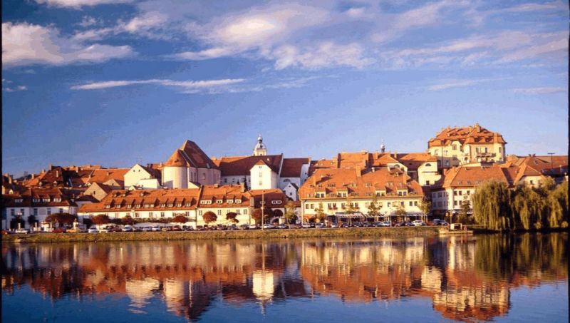

Культурная столица Европы (2012 г.）, молодежная столица Европы (2013 г.), город спорта Европы (2018 г.). Обладатель этих почетных званий второй по величине город Словении - Марибор.
Посещение города с гидом обязательно! А с гидом словенцем - необхоходимо, если вы настроены прочувствовать Словению ,,от а до я,,.
В экскурсию войдет знакомство со всеми или на ваш выбор достопримечательностями Марибора, среди которых: замок, готический собор Иоана Крестииеля （построен в 12 веке), францисканская церковь, ратуша, церковь св. Алоизия, краеведческий музей.
Главная достопримечательность Марибора - самая старая виноградная лоза мира, занесённая в Книгу рекордов Гиннесса. Её возраст более 450 лет.
Город окружен холмами и виноградниками. Неудивительно что в Мариборе ярче и интереснее всего проходит Мартирование - праздник молодого вина, которое рождается примерно в середине ноября. Дата праздника 11 ноября в день памяти святого Мартина.
Мариборскин винотеки и рестораны с национальной кухней не оставят вас равнодушными.
В Мариборе расположен горнолыжный курорт Похорье. В несезон катания на лыжах, поднявшись на фуникулере, можно любоваться городом и пейзажами с высоты.
В городе проживает около 100 тыс. чел., есть аэропорт и престижный университет.
Экскурсию в Марибор предлагаем совместить с посещением старейшего в Словении города Птуй и Птуйской горы.